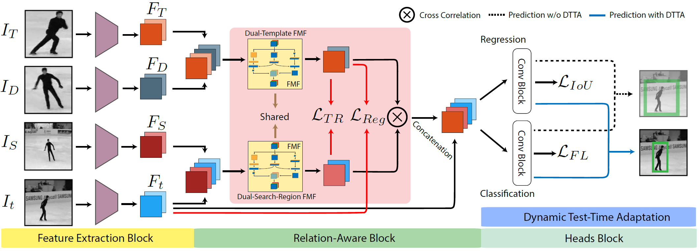
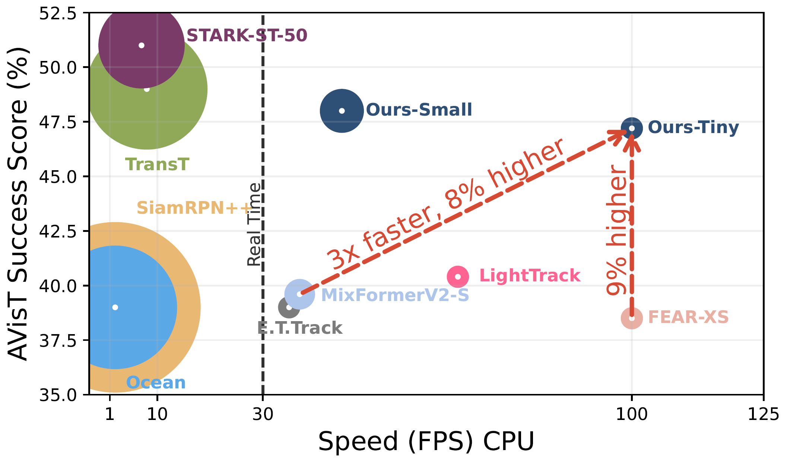
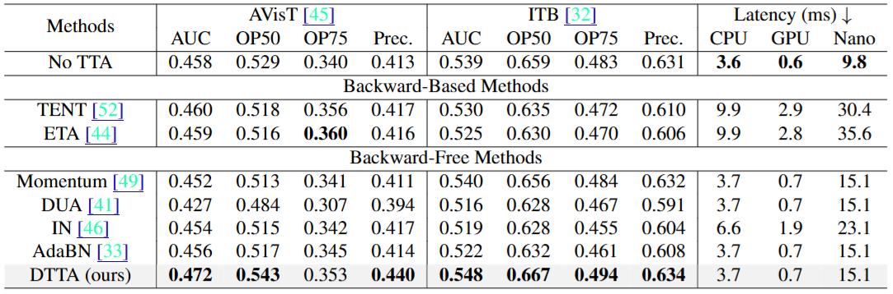

Overall Approach

The Feature Extraction Block uses a readily available backbone to process the frames. The RelationAware Block exploits representational relations among the dual-template and dual-search-region through our losses, where dual-template and dual-search-region representations are obtained via our learnable FMF layer. The Heads Block learns lightweight convolution layers to infer the bounding box and the classification score through standard tracking losses. During inference, the tracker adapts to every instance through our Dynamic Test-Time Adaptation framework.
OOD Comparison

Comparison of our trackers with others on the AVisT dataset on a CPU. We show the success score (AUC) (vertical axis), speed (horizontal axis), and relative number of FLOPs (circles) of the trackers. Our trackers outperform other efficient trackers in terms of both speed and accuracy.
Dynamic Test-Time Adaptation

Comparative study on test-time adaptation (TTA) approaches on AVisT as it involves various extreme distribution shifts with real-world corruptions and ITB as the next most challenging benchmark.
VOT benchmark Comparison
Comparative study on VOT2020 Benchmark.
AVisT, NFS30, UAV123, TrackingNet, GOT-10k, and LaSOT benchmarks

Comparative Study with other SOTA approaches on various benchmarks including AVisT, NFS30, UAV123, TrackingNet, GOT-10k, and LaSOT.
ITB, OTB, TC128, and DTB70 benchmarks
Comparative study on ITB, OTB, TC128, and DTB70 benchmarks in terms of their AUC score.
BibTeX
@inproceedings{zaveri2025siamabc,
title={Improving Accuracy and Generalization for Efficient Visual Tracking},
author={Zaveri, Ram and Patel, Shivang and Gu, Yu and Doretto, Gianfranco},
booktitle={Winter Conference on Applications of Computer Vision},
year={2025},
organization={IEEE/CVF}
}